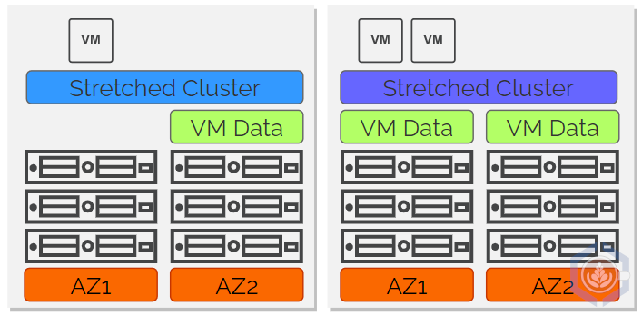
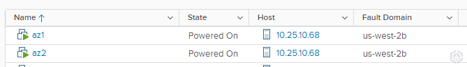
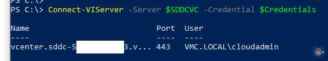
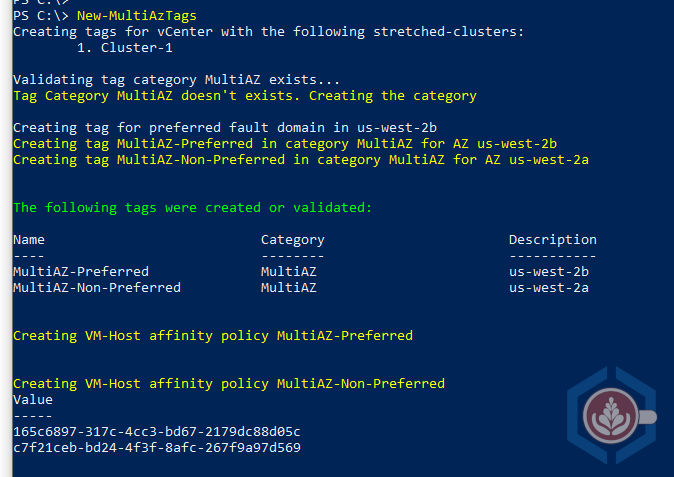
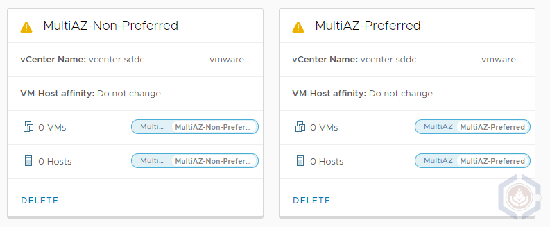
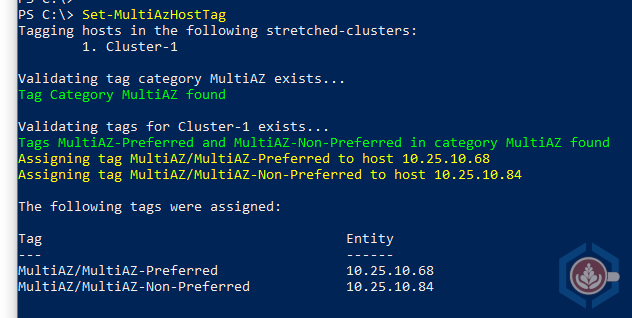
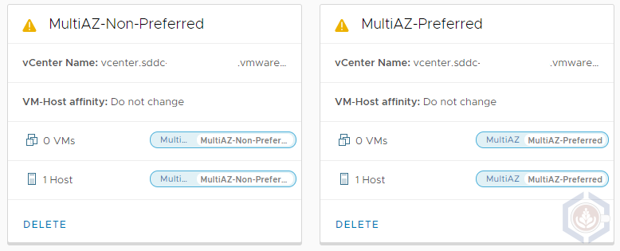

PowerShell Module to Manage Workload Placement in VMware Cloud on AWS Stretched Clusters
Stretched Clusters provide the ability to protect an SDDC running in VMware Cloud on AWS from an Availability Zone failure. If you would like to know more about the Stretched Clusters capability, sometimes referred to as Multi AZ SDDCs in VMW on AWS, make sure you read this article by Emad Younis, this post by Frank Denneman and this article by Glenn Sizemore. In addition, as announced in December 2019, there is a 95% discount on the cross-AZ traffic between the AZs.
Just like a standard vSAN cluster, storage consumption in a Stretched Cluster is managed using storage policies. The Failures to tolerate settings defines how data is placed in a single AZ, e.g. RAID1 FTT1, while Site disaster tolerance configures how data is placed across the AZs. The workload can either be mirrored across sites or set to a specific site (preferred or non-preferred) with no cross-site protection. Logically, most workloads in a Stretched Cluster will be protected across both sites. However, there may be some cases where vSAN cross-AZ protection is unnecessary, such as workloads that already offer application level redundancy.
One aspect that is sometimes overlooked is that the storage policies only handle data placement while the placement of compute is handled by DRS. By default, DRS has no awareness of where the storage of a specific workload resides and whether it’s replicated across the sites. This can result in a misalignment of the data and compute placement. For example, the storage policy can configure data to be placed in the preferred site while DRS places or moves the VM to a host in the non-preferred one. Another potential scenario is a clustered application that can have both instances running on hosts in the same AZ which increases recovery time in case of an AZ failure.

On-prem, DRS affinity rules are leveraged to make DRS aware of vSAN storage placement. In VMW on AWS the same outcome can be achieved using tags and Compute Policies. Basically, two VM-Host compute policies should be created – one for the preferred site and on for the non-preferred site. After that all the hosts in the corresponding fault-domains will need to be tagged. In addition, every time a host is added to the cluster it will need to be tagged otherwise no VMs from these compute policies will be running on the new host. It is possible to create the compute policies manually and then tag all the hosts, but to make the process easier and faster I created a PowerShell module named MultiAZTagging.psm1 to create the policies and tag the hosts.
PowerShell Module Review
The module contains two cmdlets:
- New-MultiAzTags - Creates a tag category, tags and compute policies for the preferred and non-preferred sites. By default, all the objects created are prepended with “MultiAZ”. A different string can be specified using the TagCategoryName parameter.
- Set-MultiAzHostTag – Assigns the appropriate tags to hosts in the cluster. A specific host or cluster can be specified, using either HostName or ClusterName, otherwise all the hosts in the SDDC will be tagged. If the right tag exists on the host no action is taken. In case a different value other than “MultiAZ” was used to create the tags it should be specified using the TagCategoryName parameter.
Using the MultiAZ Tagging Module
Before I step into how to run the script, I wanted to give you a quick recap of the environment I’m going to run it on. This is stretched cluster SDDC deployed across two AZs in Oregon (us-west-2). The AZs are us-west-2a and us-west-2b (preferred fault domain):
There’s two VMs in the cluster, az1 and az2. At the moment they both run on a host in us-west-2b, which is the preferred site:

Step 1 - Download the PowerShell module
Step 2 - Import the PowerShell module
Import-Module .\MultiAZTagging.psm1
Step 3 - Connect to a vCenter in a Stretched Cluster SDDC using Connect-VIServer

Step 4 - Connect to the same vCenter using Connect-CisServer (this step is required to create the compute policies)
Step 5 - Run the New-MultiAZTags command to create the tag category, tags and compute policies

As shown by the command’s output, the following were created:
- A tag category with the name MultiAZ. Only one tag from this category can be assigned to a single host or VM
- Two tags in the MultiAZ tag category - MultiAZ-Preferred and MultiAZ-Non-Preferred. The description of each tag specifies the AZ for that site
- Two compute policies named MultiAZ-Preferred and MultiAZ-Non-Preferred. Each policy is a VM-Host affinity policy which requires the hosts and VMs to be tagged using the matching tags created previously. Note that there are zero hosts/VMs matching this policy as no host/VM has any of the tags assigned

Step 6 – Run the Set-MultiAzHostTag command to tag all the hosts in the SDDC

- As the command’s output shows, each host was assigned a tag that matches their fault domain
- In addition, the compute policies now show that each policy has a single host with a matching tag

Step-7 – Assign tags to the appropriate VMs. This can be done manually via the GUI or by using the New-TagAssignment PowerCLI command.
- In my environment I tagged VM az1 with the MultiAZ-Preferred tag and VM az2 with the MultiAZ-Non-Preferred tag. Following that both compute policies now show one associated VM in addition to the host
- A couple of seconds after I assigned the MultiAZ-Non-Preferred tag to the az2 VM DRS initiated a migration to the host in the non-preferred fault domain
As I mentioned before, there are several use cases I can think of for pinning a VM to a specific site. The most obvious one is a VM that is not replicated across AZs, so it makes sense to have the VM running in the same AZ. The second one is a resilient application, such as AD Domain Controllers, where making sure at least one node is always running. The great thing about compute policies is that they leverage a ‘should’ rule. That means that if an entire AZ fails, for example the non-preferred one, if the VM data is replicated the VMs set to the MultiAZ-non-preferred compute policy will still be powered on the preferred site by vSphere HA. Once the non-preferred AZ comes back up DRS will migrate the VMs to hosts the adhere to the compute policy.
I hope that you find this PowerShell module useful and that it can help address some design requirements in your SDDC. At the moment, in order to tag new hosts that are added to the SDDC using eDRS or as a planned procedure, you’ll need to run Set-MultiAzHostTag again. Since it skips existing hosts you can also run it on a schedule. In the next couple of weeks, I’m planning on testing integration of the Set-MultiAzHostTag with VEBA, so it can be run when a new host is added to the SDDC.
Asaf Blubshtein
Cloud Customer Success Architect
My current role focuses on VMware Cloud on AWS. I spend the rest of my time with my wife, our two cats, my home-lab, and our espresso machine.